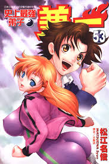
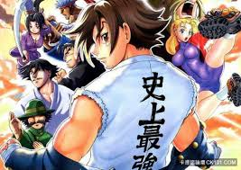
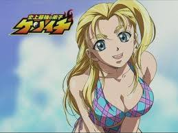
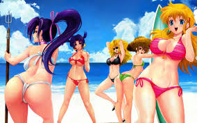

故事大綱
白濱兼一是個善良的高中一年級生，但總受到許多不合理的欺負。在偶然的情況下，他與轉學生風林寺美羽成了好朋友。之後受到美羽的吸引
之下，兼一到了名為「梁山泊」的道場修行武術。

經過一連串非人道的修行，兼一的武術造詣上升非凡，卻也因此被不良組織「諸神黃昏」盯上，被逼迫要與「諸神黃昏」所派遣的刺客武術家決鬥
，在瓦解了諸神黃昏之後。「黑暗」為了要和梁山泊爭奪「史上最強」這個稱號，兼一又必須和「黑暗」的弟子群「YOMI」進行決鬥

個人覺得這個漫畫最大的
"特色"


排行
|
| 第一 | 職業獵人 |
| 第二 | 史上最強的第子兼一 |
| 第三 | 火影忍者 |